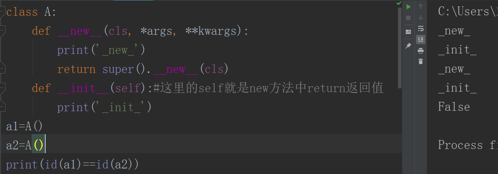
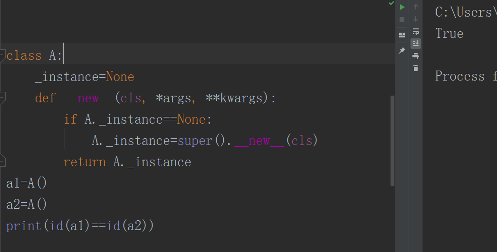

单例模式用于只生成一个对象，例如像计算机的回收站只需要一个即可。
通过类实例化的对象，会分配两个不同的内存空间，因此内存地址，id也就不相同，例子如下：

new方法一般不会用到，它是父类中的方法，一般不用自己写，系统自动调用，如果自己写了就会覆盖父类中的new方法。
new方法在内存中开辟一块空间，就像买了一个房子，init是初始化方法，就像在房子里面装修一样。
在单例模式中要使用到new方法，因为new方法中的返回值会传给init中的self，截图如下：

a1，a2指的是同一个对象，因此内存地址，id也相同。
__instance为私有的类属性，防止外界修改。当__instance为None时，意味着类还没有实例化，在内存中分配空间。于是就调用父类中的new方法分配空间。当再次实例化时，__instance就不为None了，因此也不会再开辟新的内存空间，返回的是第一次开辟的内存空间，因此空间地址相同，只有一个对象。